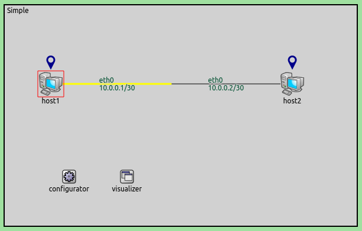
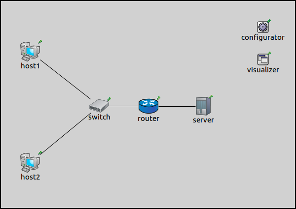
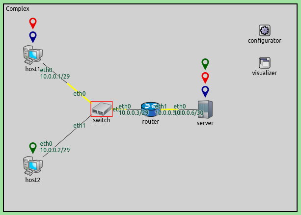
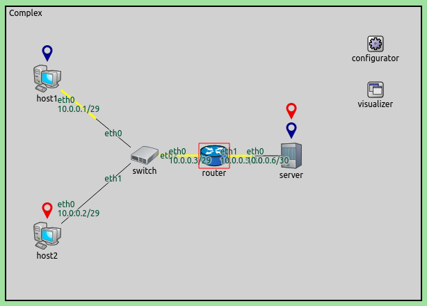
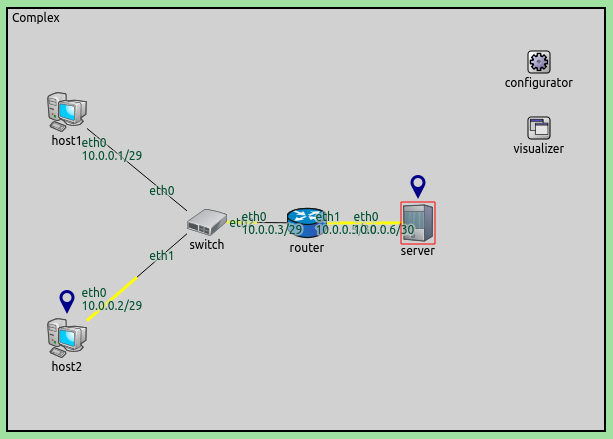
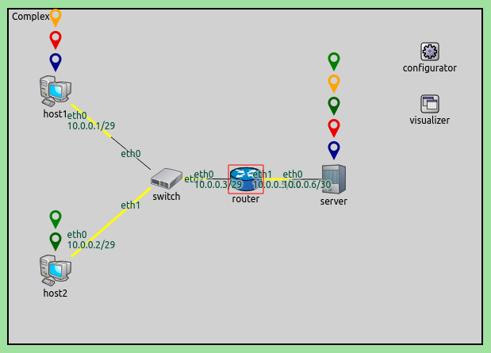
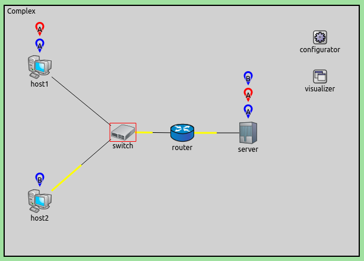

Transport connection visualization makes it easy to get information about the active transport connections in the network at a glance, without drilling down in the GUI. It makes it easy to identify connections by their two end-hosts, and to tell different connections apart. It also gives a quick overview about the number of connections in certain nodes and the whole network. This example demonstrates such visualization of TCP connections.
The example consist of 2 simulation models. The first one demonstrates the basic use of the visualization. The second, more complex configuration showcases a more advanced use-case. TODO: The second, more complex configuration shows the more advanced features.
The TransportConnectionVisualizer displays an icon above the two end-hosts of an active, established transport layer level connection. It reacts to changes in the state of the connection. It places the icon when the connection is established, and removes it when it is closed. The icons are color coded, denoting different connections. Should there be more connections than available colors, a letter in the icon helps differentiate between connections with the same icon color. Naturally, there can be multiple connections open at a node, thus there can be multiple icons.
The sourceNodeFilter and destinationNodeFilter parameters specify which connections should be visualized, depending on the connection's source and destination node, respectively. The sourcePortFilter and destinationPortFilter parameters select connections to be visualized based on the connection's source and destination port number, respectively. By default, connections with all port numbers in all hosts are visualized.
The iconColor parameter specifies what icon colors to use for differentiating various connections. It takes a list of colors, e.g. "blue, red, green". It also takes a set of colors, either "light" or "dark".
This parameter takes a set of colors, which is either "light" or "dark", using light or dark colors, respectively. Colors can also be listed, e.g. "blue, red, green", to use just these colors for the icons.
It is important to note that packet paths belonging to the connection have no effect on this visualization (see Visualizing Transport Routes TODO). The transport connection visualization doesn't indicate anything about what paths packets take.
It consist of 2 StandardHosts connected to each other. It also contains a IPv4NetworkConfigurator and a TransportConnectionVisualizer module.
TCP applications are set up in both hosts, and host1 is configured to connect to host2, and send TCP packets to it. The visualization of transport connections is enabled with the visualizer's displayTransportConnections parameter:
TODO: include this in the routingtable sample
When the simulation is run for a while and TCP connection is established, the network looks like this:
TODO: update screenshots
The icon representing the end-points of the TCP connection is placed above the hosts.
This configuration demonstrates the visualization of multiple connections, and filtering nodes and ports. It uses the following network:
There are two StandardHosts connected to a switch, which is connected via a router to another StandardHost, the server. The hosts are configured to connect to the server via TCP and send packets to it.
There are multiple TCP applications set up in the hosts that connect to the server:
The visualizer is instructed to only visualize connections with destination port 80:
When the simulation is run and the connections are established, the network looks like the following:
A node can have multiple connections. Here, host1 has two, and server has three. Thus there are multiple icons placed above each other at these hosts. Connections can be differentiated by their icon color.
To visualize the connections that use port 22 at the server, the sourcePortFilter should be set to 22. The network would look like this:
Additionally, to visualize port 22 connections at host2 only, the sourceNodeFilter parameter should be set to host2. It would look like this:
When all node and port filters are set to "*" (their default), all 5 connections are visualized:
To illustrate what happens in a large network when there are more connections than available colors, the iconColor parameter is set to use only two colors, blue and red. Here is what the network would look like, with all connections visualized:
To differentiate connections with the same icon color, capital letters are displayed in the icon.